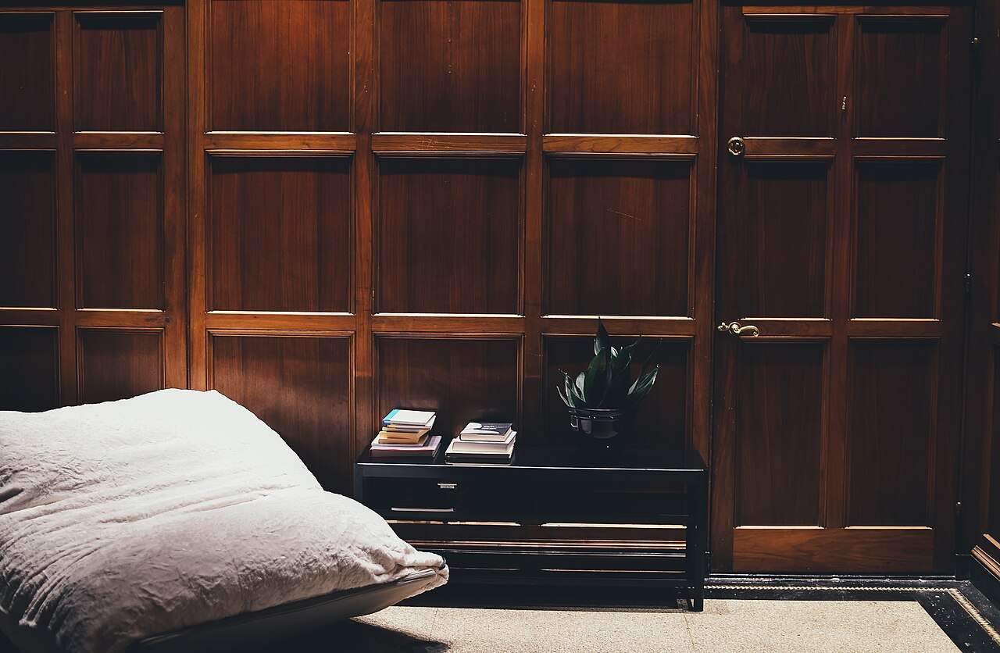
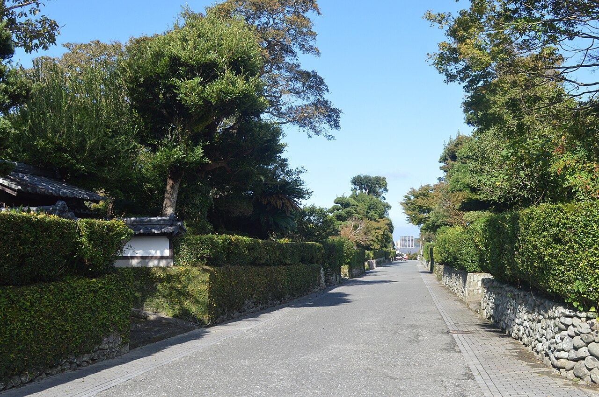

お店について
現在わかっている情報をまとめています。
基本情報
- 店名kimama
- 業種カフェ
- 所在地鹿児島県出水市高尾野町
- 電話0996-82-0960
- Instagram@kimama20
- 店主・スタッフ準備中(お問い合わせください)電話で確認
- 席数準備中(お問い合わせください)電話で確認
- お店のこだわり準備中(お問い合わせください)電話で確認
出水市高尾野町について
高尾野町は、鹿児島県北西部の出水市にあります。出水市は、冬にツルが渡ってくる地として知られています。
市内には、武家屋敷が並ぶ出水麓の街並みも残っています。お出かけの際は、あわせて訪ねてみるのもよいかもしれません。
ここで紹介した内容は地域についての一般的な情報で、kimamaとの関係を示すものではありません。

お店からのお知らせ
現在、掲載できるお知らせは準備中です。最新の情報はInstagramでご確認ください。
Instagramを見る